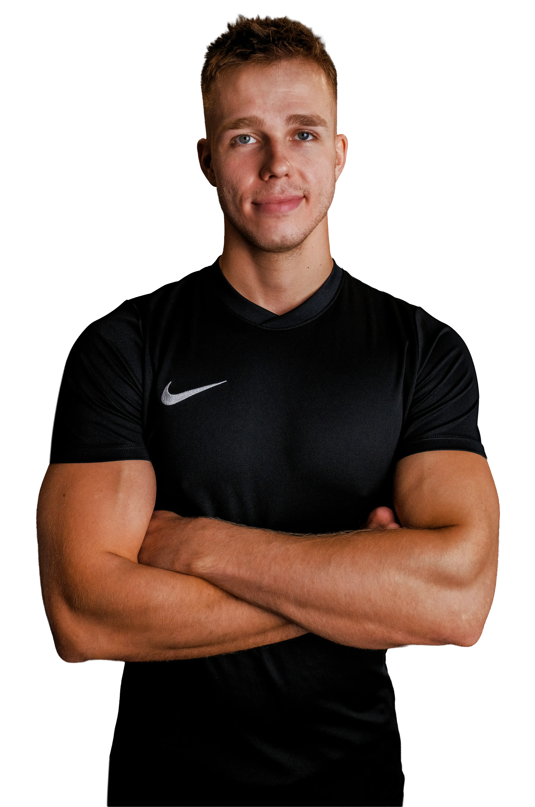

Fitness, który działa, bo jest dla Ciebie.
Pomagamy ambitnym osobom z Warszawy, które chcą realnych zmian w samopoczuciu i sylwetce.
Zacznij już dziś!Chcesz czuć się lepiej w swoim ciele, mieć więcej energii i w końcu być zadowolony z widoku w lustrze?
Chcesz w końcu zobaczyć efekty, które zostaną z Tobą na lata?
Pomagamy Ci zrealizować te cele bez poczucia walki z sobą i działania wbrew sobie.
W Hiperboli wierzymy, że trening powinien przynosić realne, korzystne zmiany, a nie być stresorem czy grą pozorów, dzięki której masz wrażenie, że „niby coś robisz”.
Dlatego tworzymy kameralną przestrzeń, w której:
- działasz z ludźmi, dla których trening to coś więcej niż wygląd;
- treningi personalne to część przemyślanego systemu, obliczonego na dostarczanie określonych efektów w ustalonym wcześniej czasie.
Dzięki interdyscyplinarnemu podejściu pomagamy zbudować nie tylko lepszą sylwetkę, sprawność i wydolność, ale również odporność na stres, samoakceptację i pewność siebie.
Rozumiemy, że Twój organizm i psychika nie funkcjonują w oderwaniu od codziennego życia, poziomu stresu, wieku czy zmian hormonalnych. Dlatego każda minuta z trenerem na sali to część zaplanowanych działań. W szybkim i wymagającym życiu w tym mieście, nie ma miejsca i czasu na bezsensowny przypadek.
Od pierwszego treningu uczysz się świadomego, wydajnego i bezpiecznego ruchu, żeby rozumieć swoje ciało i wiedzieć, co robisz i dlaczego.
Zostajesz na dłużej tylko dlatego, że chcesz, nie dlatego, że musisz.

Jak to działa?
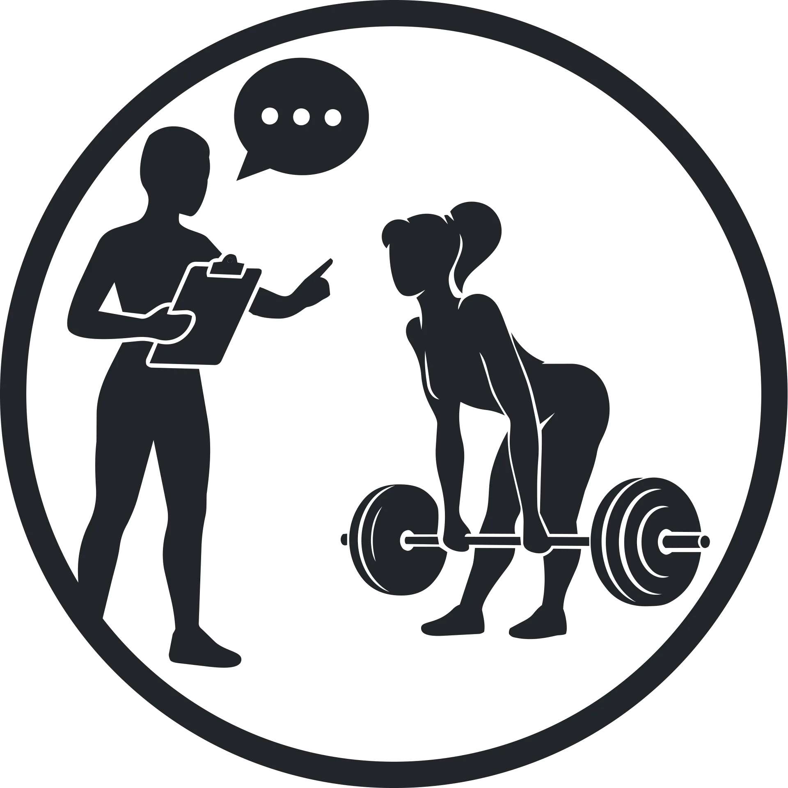
Indywidualny trening dopasowany do Ciebie
Trening 1:1 dopasowany do Twoich celów, możliwości oraz potrzeb organizmu.
Odżywianie, które pasuje do Twojego życia
Plan żywieniowy, który da się utrzymać na co dzień i na wyjazdach.
Wsparcie na każdym etapie
Trening dopasowany do Twojego organizmu i gospodarki hormonalnej.
Hiper-konkretna GWARANCJA
Gwarantujemy rezultaty. Jeśli trzymasz się wytycznych, ale nie widzisz zmian – zwracamy Ci pieniądze, albo działamy dalej za darmo, aż zobaczysz efekty.
KOMFORT
Trenujesz w kameralnym studiu bez tłoku, pośpiechu i walki o sprzęt. To przestrzeń, w której możesz skupić się realizacji swoich celów.
BEZPIECZEŃSTWO
Dbamy o technikę, asekurację i racjonalny progres. Trening jest dostosowany do Twoich możliwości bez niepotrzebnego ryzyka.
PERSONALIZACJA
Nie korzystamy z gotowych schematów. Trening i odżywianie dopasowujemy do Twojego celu, stylu życia, poziomu aktywności oraz specyfiki Twojego organizmu.
ŚWIADOMOŚĆ
Chcemy dać Ci pełne zrozumienie tego, co robisz i dlaczego to działa. Dzięki temu nie tylko osiągasz efekty, ale również wiesz, jak je utrzymać i nie jesteś od nas długofalowo zależny.
Mniej chaosu. Więcej efektów.
Prawdziwi ludzie. Prawdziwe historie.
Każda z naszych podopiecznych zaczynała z innym celem, historią i punktem wyjścia. Łączy je jedno: zdecydowały się zrobić pierwszy krok.
Michelle, 33 lata
Mama dwójki dzieciPo latach prób i zrywów motywacji w końcu znalazła system, który działa.
Efekt po 12 tygodniach:- -8 kg tkanki tłuszczowej
- -5 cm w talii
- +1,5 kg mięśni
„Najważniejsze? Mam więcej energii i pewności siebie.”
Iga, 20 lat
Specjalistka ds. sprzedaży i obsługi klientaMimo nabytej wady serca zbudowała 12 kg masy mięśniowej i znacząco poprawiła swoją sprawność.
Efekt:- 12 kg zbudowanej masy mięśniowej
- Znacząca poprawa sprawności
- Bezpieczny trening dopasowany do jej możliwości
„Trener Michał wszystko dokładnie mi wyjaśnił i zadbał o poprawną technikę wykonywania ćwiczeń. Przyjazna atmosfera i profesjonalne podejście.”
Jolanta, 63 lata
Emerytowana pielęgniarkaOdzyskała większy komfort ruchu na co dzień i zredukowała dolegliwości bólowe.
Efekt:- Większy komfort ruchu na co dzień
- Redukcja dolegliwości bólowych
- Lepsze funkcjonowanie mimo udaru niedokrwiennego, osteopenii i przepuklin kręgosłupa
Wyniki są indywidualne i zależą od punktu wyjścia oraz zaangażowania w proces.
Opinie naszych podopiecznych
Umów bezpłatną konsultację
Podczas rozmowy poznamy Twoje cele, potrzeby i sytuację, a następnie wskażemy optymalną dla Ciebie formę współpracy.
Umów bezpłatną konsultacjęUmów trening wprowadzający
Sprawdź, czy nasze studio to miejsce dla Ciebie bez ryzyka. Po wypełnieniu formularza nasz konsultant zadzwoni, aby ustalić termin treningu.
Zarezerwuj swój pierwszy treningNASZA OFERTA
TRENING PERSONALNY
Indywidualna współpraca dla osób, które chcą poprawić sylwetkę, zdrowie i samopoczucie. Trening, odżywianie i wsparcie dopasowujemy do Twoich celów, możliwości i stylu życia, żeby efekty były nie tylko widoczne, ale również trwałe.
Dowiedz się więcejTRENING MEDYCZNY
Jeśli wracasz po kontuzji, zmagasz się z bólem lub chcesz odzyskać sprawność, pomożemy Ci bezpiecznie wrócić do aktywności. Skupiamy się na odbudowie siły, pewności ruchu i utrzymaniu komfortu na co dzień.
Dowiedz się więcejTRENING SPECJALISTYCZNY
Dla osób, które chcą rozwijać się sportowo lub przygotować organizm pod konkretną aktywność. Łączymy trening siłowy, motoryczny i funkcjonalny, aby poprawiać wyniki, sprawność i odporność na urazy.
Dowiedz się więcejTRENING MENTALNY
Głowa potrafi zatrzymać postępy skuteczniej niż jakakolwiek kontuzja. Sesje coachingu oparte na wieloletnim doświadczeniu w pracy z psychiką: pracujemy nad motywacją, radzeniem sobie ze stresem i budowaniem nawyków, które sprawiają, że cały proces przestaje być działaniami na siłę wbrew sobie i zakładnikiem sezonowej motywacji.
Dowiedz się więcejOPIEKA ONLINE
Kompleksowe prowadzenie obejmujące trening, odżywianie, suplementację i regularną analizę postępów. Dla tych, którzy chcą osiągać efekty przy wsparciu trenera, niezależnie od miejsca zamieszkania.
Dowiedz się więcejPLAN TRENINGOWY I ŻYWIENIOWY
Indywidualny plan stworzony na podstawie Twoich celów, preferencji i stylu życia. Bez przypadkowych rozwiązań z internetu i bez restrykcji, których nie da się utrzymać.
Dowiedz się więcejZdjęcia z treningów
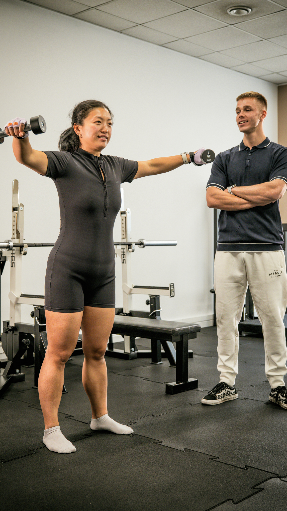
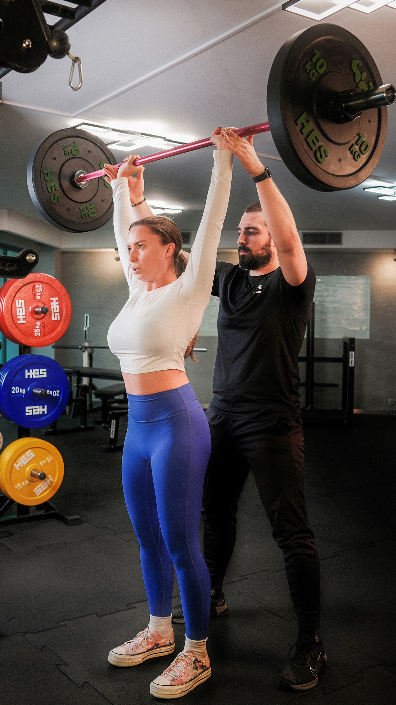
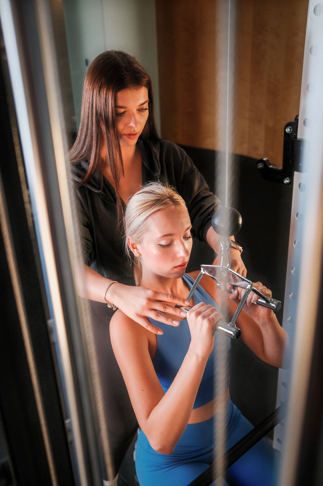
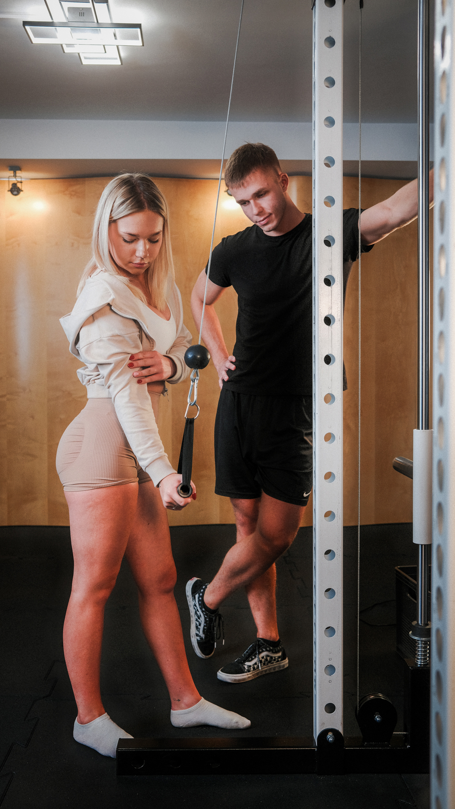
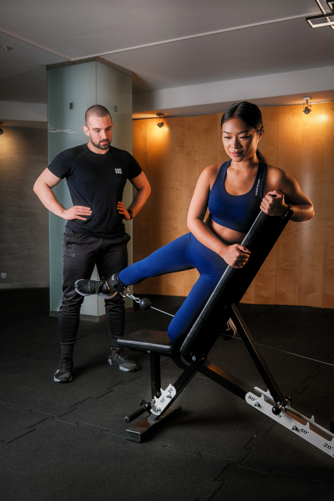
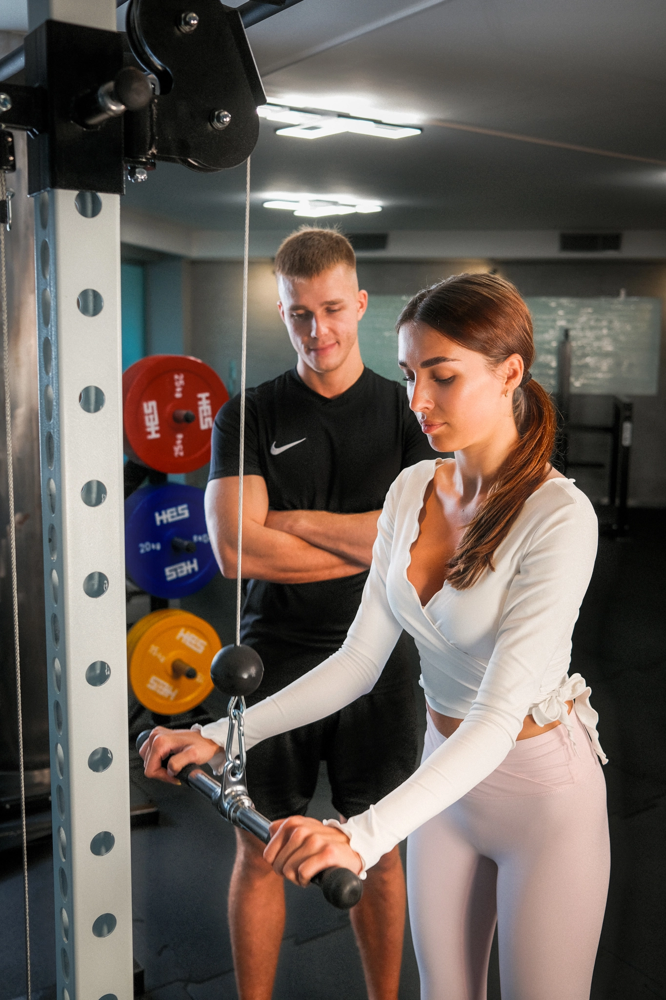
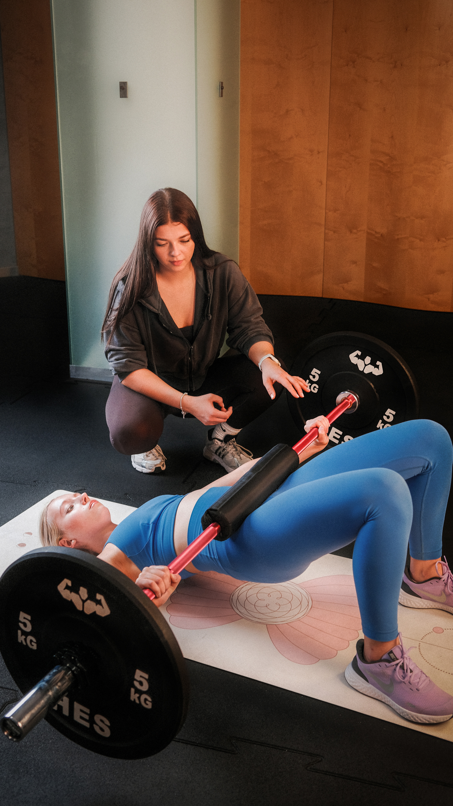
Kameralne studio treningowe w sercu Warszawy
Nasze studio mieści się na Woli, przy ul. Żytniej 16 lok. A. Kilka minut od centrum Warszawy, z wygodnym dojazdem przed pracą, po pracy lub w czasie przerwy.

Adres
ul. Żytnia 16 lok. A
Warszawa Wola
Parking
Dwa płatne parkingi w pobliżu studia
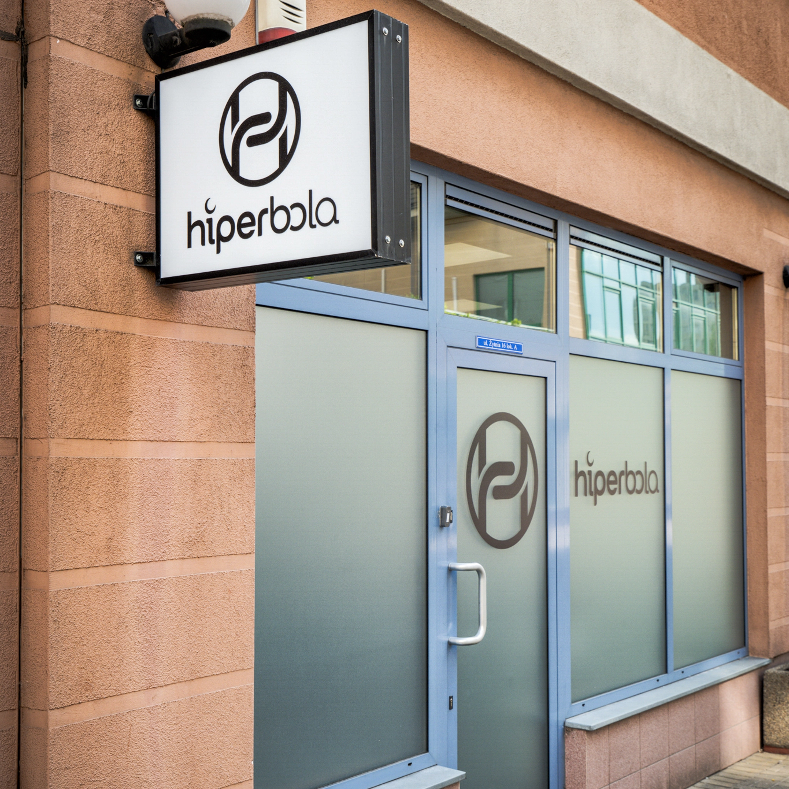
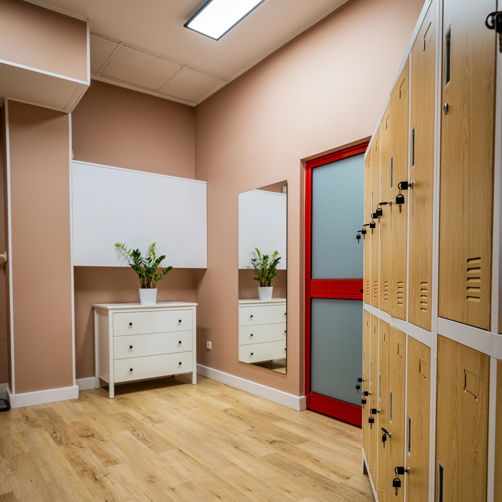
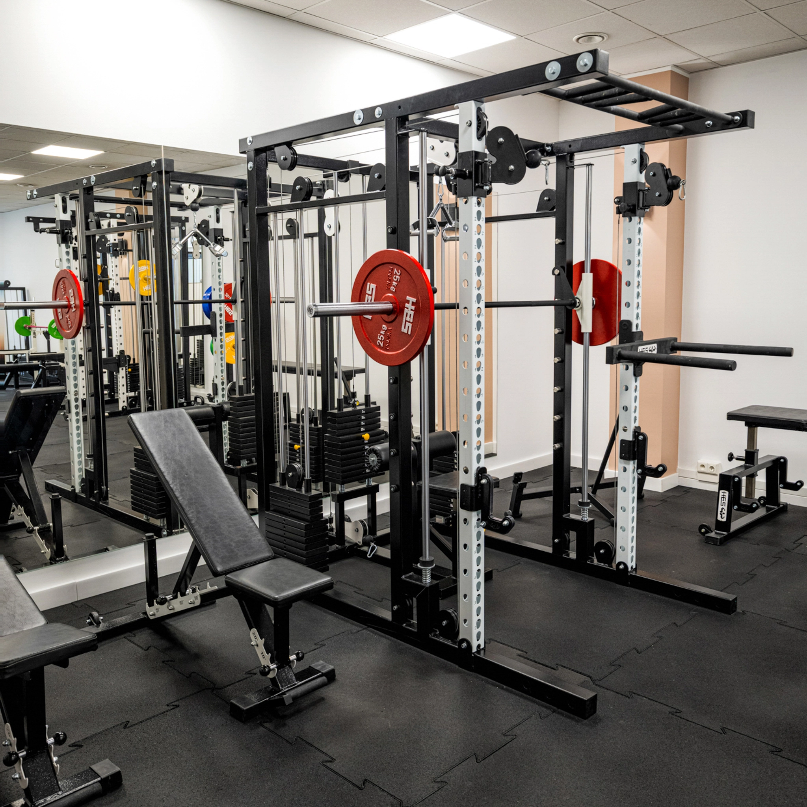
Najczęściej zadawane pytania
Tak. Wiele naszych podopiecznych zaczynało od zera. Dopasowujemy ćwiczenia, tempo i poziom trudności do Twoich możliwości, dzięki czemu możesz czuć się pewnie od pierwszego treningu.
Wierzymy w skuteczność naszego procesu, dlatego obejmujemy współpracę gwarancją rezultatów. Jeśli stosujesz się do zaleceń, realizujesz plan i nie osiągasz uzgodnionych efektów, zwrócimy Ci pieniądze lub będziemy pracować z Tobą dalej bezpłatnie, aż osiągniesz założony cel.
Nie. Naszą rolą jest pomóc Ci ją zbudować. Nie musisz być „w formie", żeby zacząć. Trening dopasujemy do Twojego aktualnego poziomu sprawności.
Większość naszych podopiecznych łączy treningi z pracą, rodziną i codziennymi obowiązkami. Dlatego planujemy współpracę tak, aby pasowała do Twojego życia, a nie odwrotnie.
Nie. Stawiamy na sposób odżywiania, który daje efekty i który można utrzymać długofalowo. Bez głodówek, produktów „zakazanych" i ciągłego zaczynania od nowa
Oczywiście. Współpracę zaczynamy od bezpłatnej konsultacji i treningu próbnego. Poznasz studio, sposób pracy oraz wspólnie sprawdzimy, czy jest to rozwiązanie odpowiednie dla Ciebie.
Tak. Pomagamy bezpiecznie wrócić do aktywności po urazach, operacjach, ciąży i dłuższych przerwach treningowych. Każdy plan dostosowujemy indywidualnie do sytuacji i możliwości.
W kameralnym studiu treningowym na warszawskiej Woli. Do dyspozycji podopiecznych pozostają szatnia oraz prysznic.
60 minut. Każda sesja jest zaplanowana tak, aby maksymalnie wykorzystać Twój czas i przybliżać Cię do celu.
Tak. Po konsultacji pomożemy Ci wybrać osobę najlepiej dopasowaną do Twoich celów, preferencji i potrzeb.
Za 90 dni i tak minie 90 dni.
Pytanie brzmi: czy będziesz bliżej swoich celów?
Umów bezpłatną konsultację i sprawdź, jak możemy Ci w tym pomóc.
Umów bezpłatną konsultację
📍 ul. Żytnia 16 lok. A
01-014 Warszawa
☎ 798 465 126
✉ kontakt@hiperbola.fitness